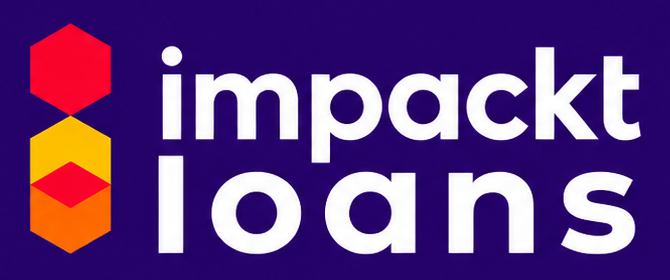

1
Check eligibility
Proposed screening: CIBIL score of at least 750, zero days past due in the previous year, anchor recommendation or membership, and a co-applicant and guarantor. Final acceptance rests with the lender.

Explore the modelCredit becomes more meaningful when it comes with a business opportunity, a committed brand and a clear view of what happens next.
{{aud.intro}}
{{f.d}}
| Relationship focus | Typical sourcing-led DSA | Proposed Impackt Loans model |
|---|---|---|
| Before sanction | Borrower sourcing and application support | Borrower + business opportunity + brand engagement |
| Use of funds | Defined by lender product | Contract-led escrow and supplier engagement |
| After disbursement | Varies by DSA agreement | Business support coordination and outcome tracking |
| Success measure | Often sourcing and disbursement | Business activity, income, repayment and savings |
Proposed screening: CIBIL score of at least 750, zero days past due in the previous year, anchor recommendation or membership, and a co-applicant and guarantor. Final acceptance rests with the lender.
Assess an existing business, develop a business idea, or match an interested first-time owner with a suitable brand opportunity.
Complete business requirements, define supplier responsibilities, and establish the escrow arrangement and account controls.
The proposed model requires at least 10% of the loan value to be maintained in the designated account before disbursement, subject to agreed lender terms.
The lender assesses and approves the loan. Disbursement and escrow use follow the signed contract, including permitted releases and recourse.
Track trading activity, earnings, repayments and savings. Use these records to develop an Impackt Score with a defined, reviewable methodology.
A disbursed loan is the beginning of the story. The proposed outcome framework follows whether a business operates, generates income and supports sustainable repayment.
These are proposed measures, not reported results. Baselines, review frequency and verification responsibilities must be agreed with each lending partner.
Setup completion, trading continuity, stock movement and repeat orders.
Sales, margins, net earnings and savings, compared with an agreed baseline.
Repayment timeliness, overdue days and repayment capacity from business cash flow.
Consented business records, escrow statements and documented brand support, with review exceptions flagged.
{{q.a}}
Explore the requirements and discussion checklist for your role.
This prepares your discussion; it does not submit an application.